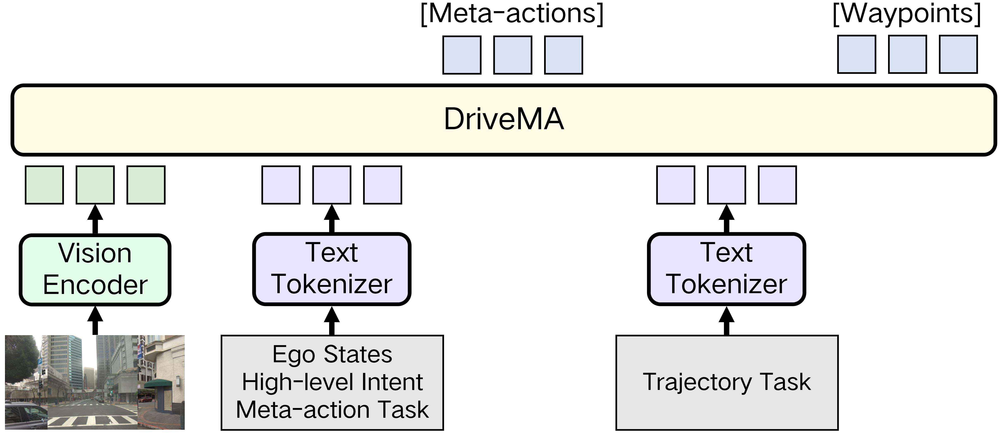
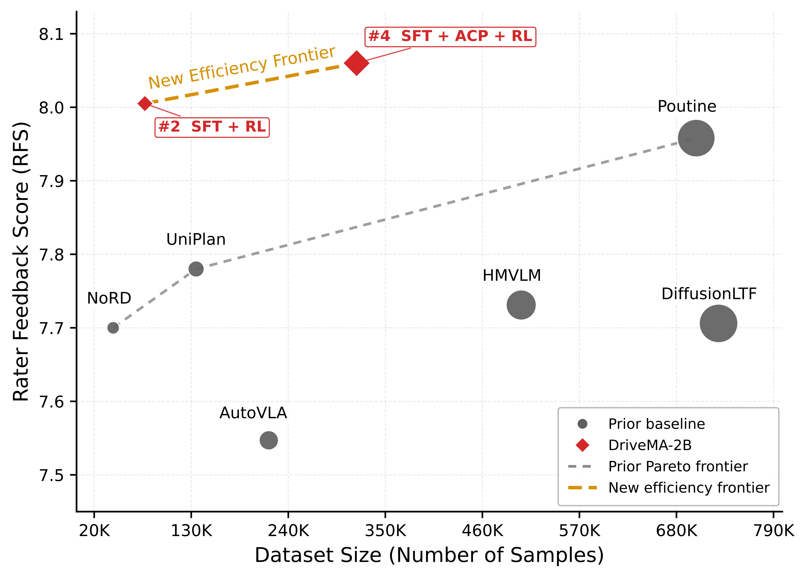
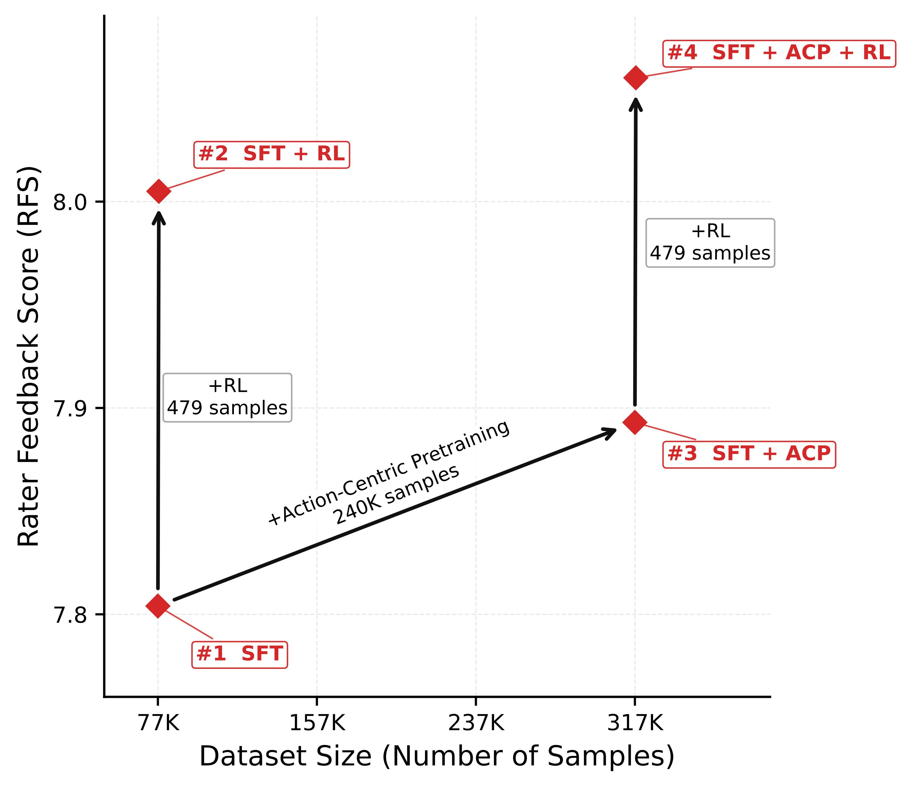

Trajectory-grounded labels
Expert future trajectories are mapped to discrete longitudinal and lateral actions. A one-step meta-action summarizes the full planning horizon with low-entropy, planning-relevant intent.
Accepted at CoRL 2026
Driving Vision-Language-Action Models
Driving Vision-Language-Action Models with Verifiable Meta-Actions
A compact, verifiable language interface that explicitly aligns high-level driving decisions with low-level trajectory planning.
1 Shanghai Qi Zhi Institute 2 IIIS, Tsinghua University 3 Tongji University
Motivation
Driving vision-language-action models promise to bring semantic knowledge into end-to-end planning. Yet a plausible language-side decision does not guarantee that the predicted trajectory will execute it. This persistent language-action gap prevents language from becoming a dependable planning interface.
In the green-light example below, the SFT model predicts “accelerate, straight” but produces an almost stationary trajectory. DriveMA addresses this mismatch by making the intermediate language interface verifiable: it is constructed from expert motion, checked against predicted motion, and optimized for alignment.
driving input → meta-action → future trajectory


Method
DriveMA formulates planning as a two-turn generation process: from a driving input, it predicts a compact meta-action and then generates future waypoints conditioned on that decision. The same trajectory-derived interface enables supervision before RL and consistency checking during RL.
Expert future trajectories are mapped to discrete longitudinal and lateral actions. A one-step meta-action summarizes the full planning horizon with low-entropy, planning-relevant intent.
Before full planning SFT, DriveMA learns to predict expert meta-actions and uses driving VQA about intention, action, and risk to adapt the VLM to driving decisions.
Verifiability makes it possible to reward not only trajectory quality, but also whether the trajectory actually carries out the predicted meta-action.

Turn-level credit assignment RL
DriveMA separates generation into a meta-action turn and a trajectory turn. Meta-action correctness is assigned to the first turn; trajectory quality and the trajectory-meta-action consistency reward are assigned to the second.
The predicted trajectory is projected back into the same verification space as the decision. By normalizing rewards within each turn, DriveMA avoids giving every token a single sequence-level signal and instead aligns high-level intent with the low-level plan precisely.
Waymo Open Dataset · Vision-based E2E
DriveMA-4B obtains the best RFS Overall, while DriveMA-2B leads on the challenging Spotlight subset and both ADE metrics.
| Method | RFS Overall ↑ | RFS Spotlight ↑ | ADE@5s ↓ | ADE@3s ↓ |
|---|---|---|---|---|
| E2E planning methods | ||||
| Swin-Trajectory | 7.543 | 6.670 | 2.814 | 1.208 |
| DiffusionLTF | 7.717 | 6.414 | 2.891 | 1.356 |
| UniPlan | 7.780 | 6.654 | 2.986 | 1.308 |
| FROST-Drive | 7.856 | 7.094 | 3.565 | 2.537 |
| RAP | 8.043 | 7.204 | 2.646 | 1.174 |
| Driving VLA methods | ||||
| AutoVLA | 7.557 | 6.944 | 2.958 | 1.351 |
| NoRD | 7.709 | - | - | 1.250 |
| HMVLM | 7.737 | 6.727 | 3.072 | 1.327 |
| Poutine | 7.986 | 6.893 | 2.742 | 1.206 |
| DriveMA-2B | 8.060 | 7.251 | 2.616 | 1.154 |
| DriveMA-4B | 8.079 | 7.169 | 2.670 | 1.166 |
Training strategy
Meta-action supervision starts the improvement; action-centric pretraining improves generalization; turn-level credit assignment delivers the strongest final result.
| Training objective | RFS Overall ↑ | RFS Spotlight ↑ | ADE@5s ↓ | L-A consistency ↑ |
|---|---|---|---|---|
| Direct Trajectory SFT | 7.741 | 7.094 | 3.065 | - |
| Meta-Action SFT w/o ACP | 7.804 | 6.832 | 2.802 | 90.59% |
| Meta-Action SFT w/ ACP | 7.893 | 7.189 | 2.774 | 91.31% |
| Vanilla GRPO w/ all rewards | 7.978 | 7.087 | 2.660 | 95.95% |
| Rtraj + Rcons | 8.052 | 7.029 | 2.674 | 98.80% |
| Rtraj + Rcons + Rmeta | 8.060 | 7.251 | 2.616 | 98.79% |
Data efficiency
With 77K planning samples and only 479 preference samples, DriveMA-2B reaches 8.005 RFS - surpassing previous VLA baselines trained on substantially larger datasets. ACP and turn-level RL then raise it to 8.060 RFS.


Qualitative comparisons
First, see how RL resolves language-action mismatches; then compare DriveMA with RAP across scenario types. Every case is shown as video.
SFT vs RL
DriveMA vs RAP
@inproceedings{zheng2026drivema,
title={DriveMA: Driving Vision-Language-Action Models with Verifiable Meta-Actions},
author={Zheng, Weicheng and Huang, Yixin and Sun, Qiao and Li, Derun and Zhao, Hang},
booktitle={Proceedings of the Conference on Robot Learning (CoRL)},
year={2026}
}